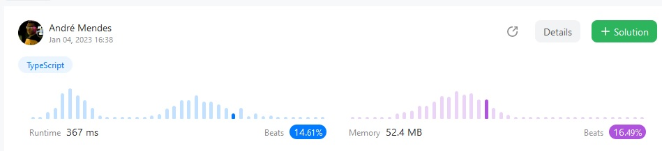
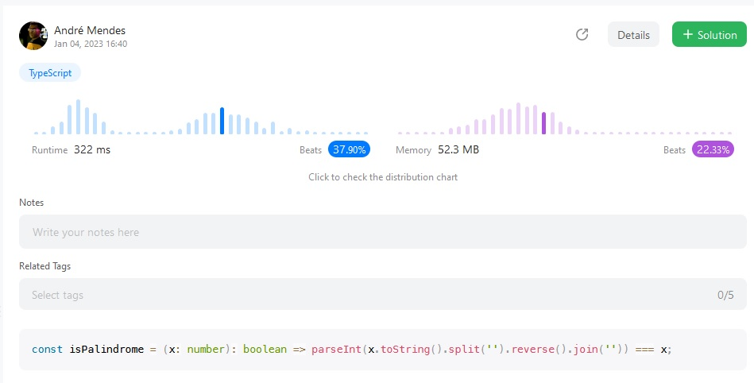
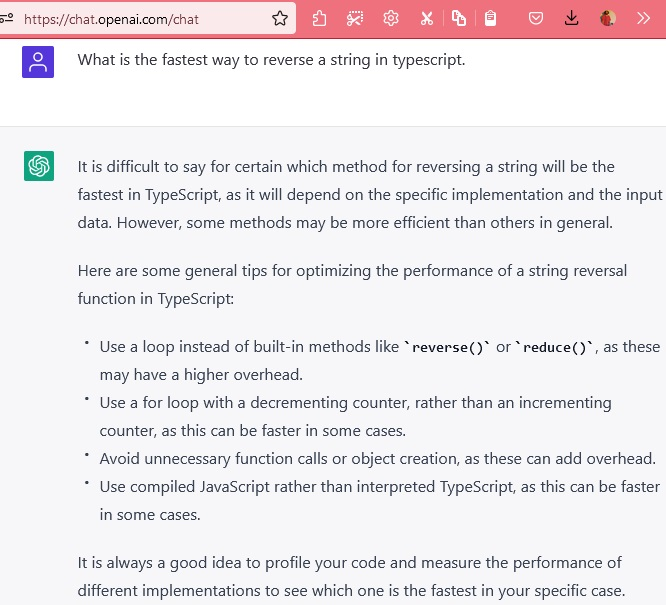
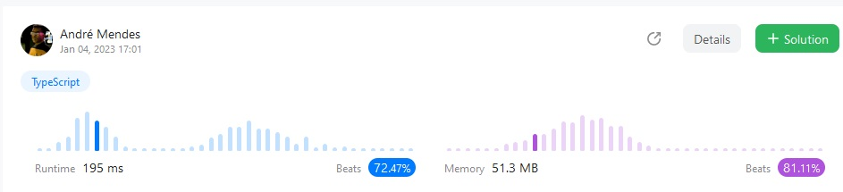

Leetcoding a palindomer checker
I find leetcoding enjoyable even outside interviewing context. Not enough to take it as a hobby tough.
As now I search for a role, I practice it in my spare time (aha).
My favourite platforms are exercism.io, leetcode.com and hackerrank.com.
On leetcode.com you got to compare your successfull results to other submissions and this is really cool. Good data visualisation is always nice!
I find it very noteworthy how a fancy and expressive one-line solution does not hold a good position against others regarding performance and memory usage:
The problem:
- Palindrome Number
Given an integer x, return true if x is a palindrome, and false otherwise.
My first submission:
const isPalindrome = (x: number): boolean => x.toString().split('').reverse().join('') === x.toString();
How it compared to others:

Upon seeing this graph, I remembered that on Leetcode.com you can go beyond just finding a solution. You can further optimize it for speed and low memory usage. That gives you a better positioning among other submissions.
So how to optimize that one-liner?
First thing I noticed it is that I was comparing two strings at the end. I could keep the unaltered number as a number type and cast the reversed string back to number before comparing them. Numbers comparisons are faster than string comparison. The graph shows:

Humm ok not much better. The string reversal is probably where the party is hapenning and with lots of run for optmization.
I am sure that syntact sugar may have some checks we do not need in this case. Going raw is probably the way to optmize.
I thought you know what? I’ll just ask ChatGPT about it:

Just like I thought.
So my next submission I removed the fancy reversal that splits string to an array, reverse that array, join it back and added one for loop. Like this:
const isPalindrome = (x: number): boolean => {
const str = x.toString();
let reversed = '';
for (let i = str.length - 1; i >= 0; i--) {
reversed += str[i];
}
return parseInt(reversed) === x;
}
How it compared to others:

Way better!